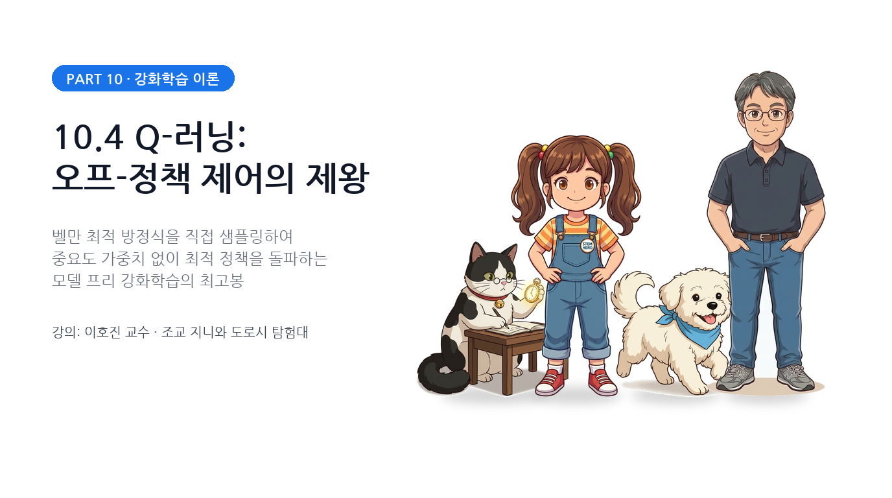
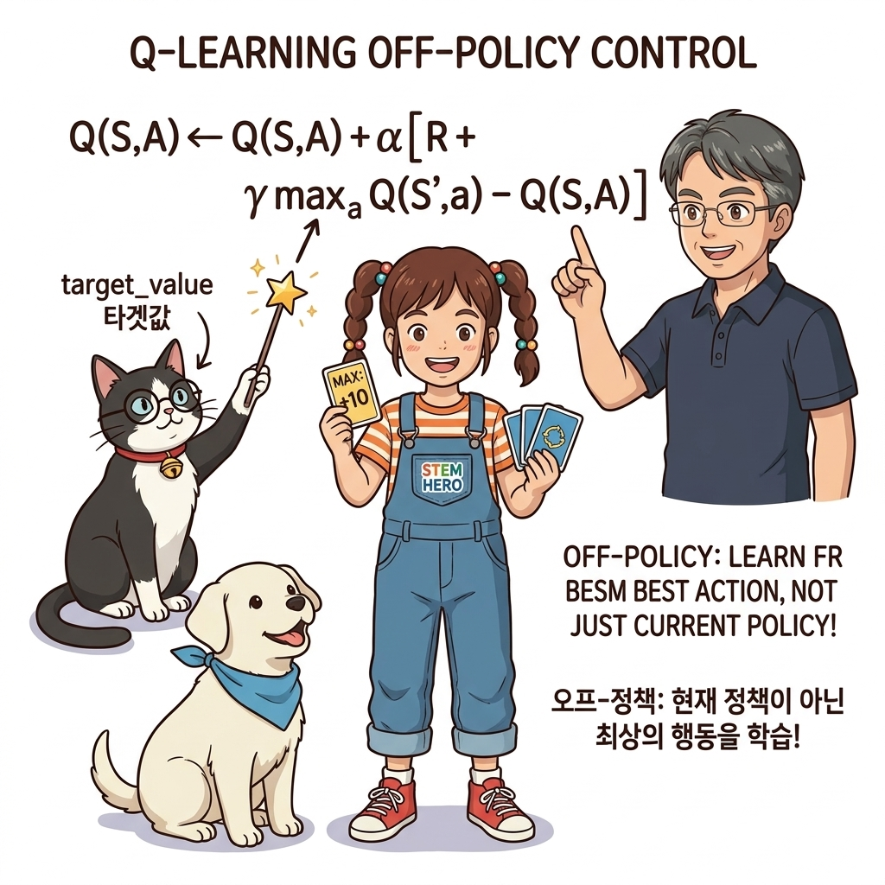
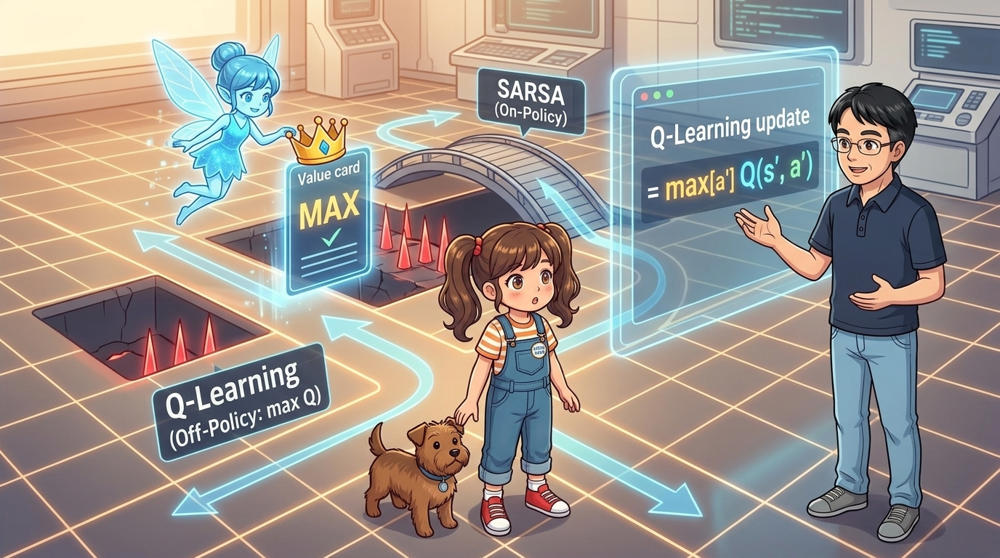
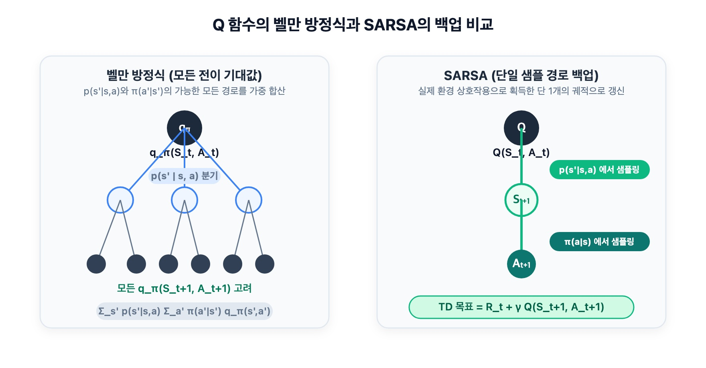
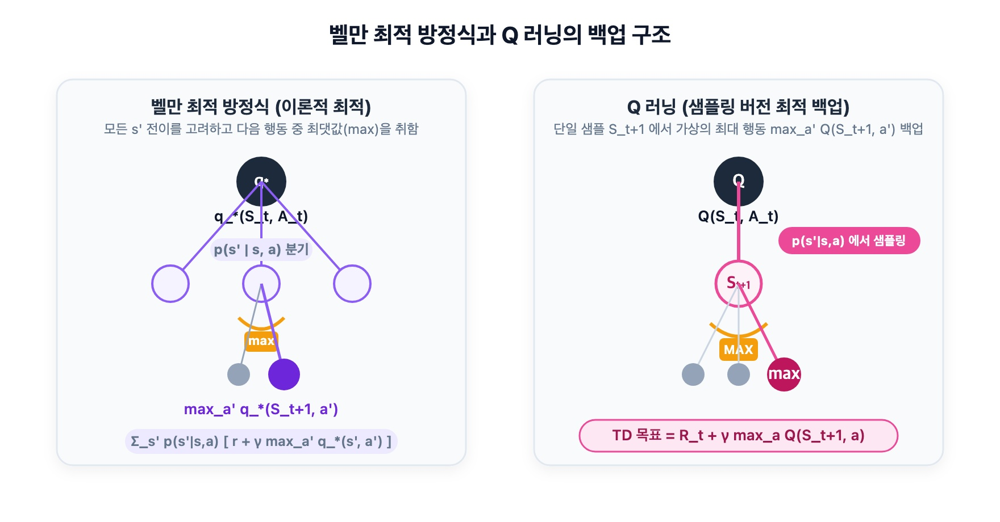
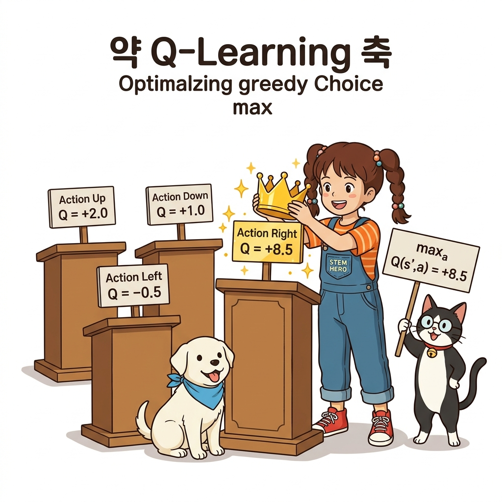
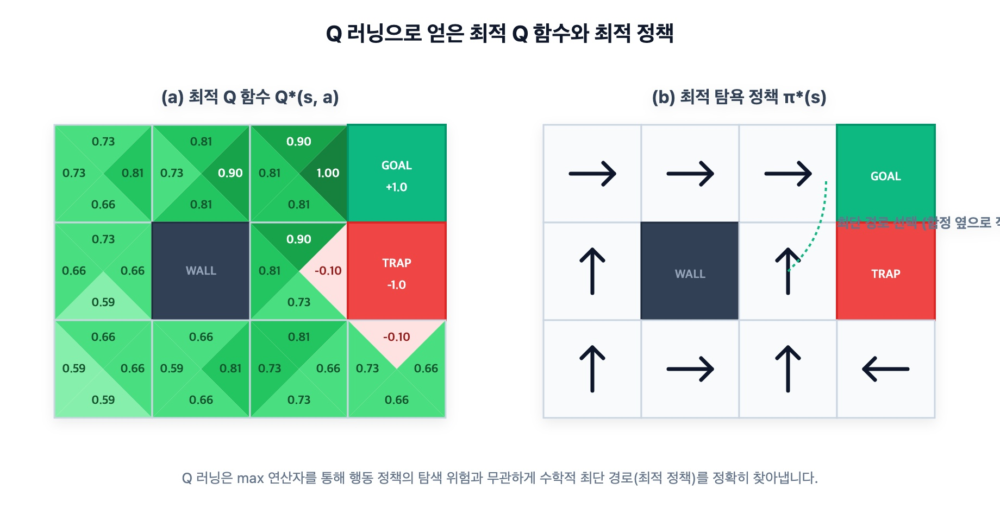

10.4 Q-러닝: 모델 프리 오프-정책 제어의 제왕


그림 10-4-1 다음 상태의 행동 후보들 중 최고 가치인 max Q(s', a') 목표판을 지팡이로 직접 가리키는 지니와 집중하는 도로시
그림 10-4-2 탐험 시의 실수(낙하)를 두려워하여 안전한 우회 다리를 건너는 온-정책 SARSA와, 다음 상태의 최댓값(max)에 황금 왕관을 씌워 최단 최적 경로를 과감하게 관통하는 오프-정책 Q-러닝의 메커니즘을 설명하는 이호진 교수님과 도로시강화학습 역사상 가장 널리 쓰이고 딥러닝과 결합하여 DQN으로 진화하게 되는 불멸의 알고리즘, Q-러닝(Q-Learning)을 공부합니다. 중요도 샘플링 비율 ρ를 전혀 곱하지 않고도 완벽한 오프-정책 학습이 가능한 수학적 비밀을 벨만 최적 방정식의 샘플링 원리를 통해 명쾌하게 정복해 봅시다!
10.4.1 왜 Q-러닝이 탄생했을까?
10.3절에서 우리는 탐험용 ‘행동 정책 b‘와 최적화용 ‘대상 정책 π‘를 분리한 오프-정책 SARSA를 배웠습니다.
하지만 오프-정책 SARSA는 치명적인 골칫거리를 안고 있었습니다:
- 행동 정책 b가 조금이라도 비탐욕적인 탐험 행동을 취하는 순간, 대상 정책의 확률이 0이 되어 중요도 가중치 ρ = 0으로 추락했습니다.
- 그 결과 힘들게 얻은 보상 Rt마저 0으로 날아가 버리고 가치가 심하게 요동치는 등 극심한 불안정성에 시달렸습니다.
[!NOTE] Q-러닝의 3대 핵심 성격:
- TD법 (시간차 학습): 에피소드가 끝나길 기다리지 않고 매 걸음마다 즉시 갱신한다.
- 오프-정책 (Off-Policy): 탐험은 ε-탐욕 행동 정책 b로 과감하게 진행하면서, 학습은 최적 가치 Q*를 향해 직진한다.
- 중요도 샘플링 완전 소거: 번거롭고 불안정한 가중치 ρ를 전혀 사용하지 않는다!
이 놀라운 마법이 어떻게 가능한지, 벨만 방정식과 벨만 최적 방정식의 대조를 통해 수학적으로 증명해 보겠습니다.
10.4.2 벨만 방정식에서 SARSA로, 벨만 최적 방정식에서 Q-러닝으로
강화학습의 두 거대한 줄기를 표로 정리하면 다음과 같이 완벽한 대칭을 이룹니다:
| 이론적 기반 (기댓값 전개) | 모델 프리 샘플링 알고리즘 | 갱신 목표 (TD Target) |
|---|---|---|
| 벨만 기대 방정식 | SARSA (온-정책) | Rt + γQ(St+1, At+1) |
| 벨만 최적 방정식 | Q-러닝 (오프-정책) | Rt + γ maxa Q(St+1, a) |
1) 벨만 방정식과 SARSA의 관계
정책 π의 Q 함수에 대한 벨만 기대 방정식은 다음과 같았습니다:
qπ(s, a) = ∑s' p(s' | s, a) · [r(s, a, s') + γ ∑a' π(a' | s') qπ(s', a')] (식 10.16: 벨만 기대 방정식)

그림 10-4-3 Q 함수에서의 벨만 기대 방정식 백업 다이어그램. 다음 상태와 정책에 따른 모든 다음 행동의 확률 가중 평균을 구합니다.SARSA는 [식 10.16]의 기댓값 계산 대신, 현실 환경에서 실제로 튀어나온 샘플 데이터 (St, At, Rt, St+1, At+1)를 그대로 대입하여 갱신하는 샘플링 버전 벨만 방정식입니다.
2) 벨만 최적 방정식과 Q-러닝의 도출
이번에는 4장에서 다루었던 벨만 최적 방정식(Bellman Optimality Equation)을 꺼내봅시다:
q*(s, a) = ∑s' p(s' | s, a) · [r(s, a, s') + γ maxa' q*(s', a')] (식 10.17: 벨만 최적 방정식)

그림 10-4-4 Q 함수에서의 벨만 최적 방정식 백업 다이어그램. 다음 상태에서 여러 갈래로 분기되는 행동들 중 오직 가치가 가장 큰 최대 행동(max) 하나만을 취합니다.| [식 10.17]의 놀라운 특징은 *특정 정책 *π의 확률 분포 ∑a' π(a' | s')가 아예 존재하지 않는다는 점입니다! 그 자리를 **maxa' q*(s', a')가 완벽하게 대체하고 있습니다. |
이제 이 벨만 최적 방정식을 환경 모델 없이 에이전트의 1-스텝 경험으로 실시간 근사(샘플링)해 봅시다.
-
상태 전이 기댓값 ∑s' p(s' s, a) · [r + …] 대신, 실제로 환경에서 관측된 보상 Rt와 다음 상태 St+1을 대입합니다. - 다음 상태의 미래 가치로는, 현재 추정 중인 Q 테이블에서 가장 큰 가치 maxa Q(St+1, a)를 꺼내옵니다.
이로써 전설적인 Q-러닝의 갱신 점화식이 탄생합니다:
Q(St, At) ← Q(St, At) + α · [Rt + γ maxa Q(St+1, a) - Q(St, At)] (식 10.18: Q-러닝 갱신식)

그림 10-4-5 다음 상태 St+1에서 실제로 어떤 엉뚱한 행동을 하든 상관없이, 가치 평가 타깃은 오직 가장 높은 Q 값(max a’)에 황금 왕관을 씌워 가져오는 Q-러닝의 원리💡 왜 중요도 샘플링 ρ가 필요 없을까?
- SARSA는 다음 행동 At+1을 실제로 취할 것이라 가정하고 그 행동의 가치를 사용하므로, 어떤 정책으로 뽑았는지에 따라 가중치 ρ를 보정해야 했습니다.
- 반면 Q-러닝은 다음 행동으로 무엇을 뽑았는지 쳐다보지도 않습니다! “다음 순간에 내가 실제로 무슨 짓을 저지르든 간에, 최적 가치의 수학적 정의에 따라 가장 좋은 행동의 가치(max)를 목표로 삼겠다”고 선언해 버립니다.
- 따라서 타깃 계산식에 행동 정책 b의 확률이 일체 관여하지 않으므로, 중요도 샘플링 비율 ρ가 수학적으로 완전히 소거되는 것입니다!
10.4.3 Q-러닝 에이전트 구현
Q-러닝의 구현은 SARSA보다 훨씬 단순하고 우아합니다.
from collections import defaultdict
import numpy as np
from common.utils import greedy_probs
class QLearningAgent:
def __init__(self):
self.gamma = 0.9 # 미래 보상 할인율
self.alpha = 0.8 # 학습률
self.epsilon = 0.1 # 탐험 확률
self.action_size = 4 # 행동 공간 (상, 하, 좌, 우)
random_actions = {0: 0.25, 1: 0.25, 2: 0.25, 3: 0.25}
self.pi = defaultdict(lambda: random_actions) # 100% 최적 탐욕 대상 정책
self.b = defaultdict(lambda: random_actions) # ε-탐욕 행동 정책
self.Q = defaultdict(lambda: 0)
def get_action(self, state):
# ❶ 행동 선택은 오직 탐험을 동반한 행동 정책 self.b로부터 샘플링
action_probs = self.b[state]
actions = list(action_probs.keys())
probs = list(action_probs.values())
return np.random.choice(actions, p=probs)
def update(self, state, action, reward, next_state, done):
# ❷ 다음 상태에서 취할 수 있는 모든 행동의 Q 값 중 최댓값(max) 추출
if done:
next_q_max = 0 # 골인 지점에서는 미래 가치 0
else:
next_qs = [self.Q[next_state, a] for a in range(self.action_size)]
next_q_max = max(next_qs) # 황금 왕관: MAX!
# ❸ 식 (10.18)에 따른 Q 함수 갱신 (중요도 샘플링 rho 불필요!)
target = reward + self.gamma * next_q_max
self.Q[state, action] += (target - self.Q[state, action]) * self.alpha
# ❹ 정책 갱신: 대상 정책(pi)은 순수 탐욕, 행동 정책(b)은 ε-탐욕
self.pi[state] = greedy_probs(self.Q, state, epsilon=0)
self.b[state] = greedy_probs(self.Q, state, self.epsilon)
SARSA 코드와의 결정적 차이점:
- 버퍼(
deque)가 필요 없다:- SARSA는 다음 상태에서 선택할 다음 행동 At+1이 결정될 때까지 기다려야 했기 때문에
maxlen=2버퍼가 필요했습니다. - Q-러닝은 다음 행동이 무엇이든 상관없이
next_state만 알면 즉시max(self.Q[next_state, :])를 계산할 수 있으므로, 경험을 받는 즉시 1스텝 단위로 즉각 업데이트할 수 있습니다.
- SARSA는 다음 상태에서 선택할 다음 행동 At+1이 결정될 때까지 기다려야 했기 때문에
- 종단 처리 더미 플러시가 필요 없다:
- 골인 시점에 버퍼에 갇혀 있는 데이터가 없으므로
agent.update(state, action, reward, next_state, done)한 줄로 종단 갱신까지 완벽하게 끝납니다.
- 골인 시점에 버퍼에 갇혀 있는 데이터가 없으므로
10.4.4 Q-러닝 실행과 SARSA와의 결과 비교
이제 그리드 월드 환경에서 1만 에피소드 동안 Q-러닝을 실행해 봅시다.
from common.gridworld import GridWorld
env = GridWorld()
agent = QLearningAgent()
episodes = 10000
for episode in range(episodes):
state = env.reset()
while True:
action = agent.get_action(state)
next_state, reward, done = env.step(action)
# 버퍼 지연 없이 즉각 갱신!
agent.update(state, action, reward, next_state, done)
if done:
break
state = next_state
env.render_q(agent.Q)

그림 10-4-6 Q-러닝으로 학습된 그리드 월드의 최종 Q 함수와 최적 정책. 폭탄(-1.0) 바로 옆을 과감하게 통과하는 최단 최적 경로가 형성됩니다.SARSA와 Q-러닝의 정책 차이 완벽 비교
| 비교 항목 | SARSA (온-정책) | Q-러닝 (오프-정책) |
|---|---|---|
| 갱신 기준 | 실제 다음 행동: Q(St+1, At+1) | 최대 다음 행동: maxa Q(St+1, a) |
| 탐험의 영향 | 탐험 중 발을 헛디딜 위험을 Q 가치에 직접 반영 | 탐험과 무관하게 이상적인 최적 경로를 학습 |
| 그리드 월드 경로 | 폭탄을 피해 멀리 위쪽 벽으로 돌아가는 안전한 우회로 | 폭탄 바로 옆을 스쳐 지나가는 최단 최적 지름길 |
| 적합한 응용처 | 파손이나 사고가 치명적인 물리 로봇 / 자율주행 | 최적 성능 달성이 중요한 시뮬레이터 / 보드게임 / 비디오게임 |
Q-러닝은 이렇게 단순함과 강력함, 그리고 이론적 수렴 보장을 무기로 강화학습을 지배하는 표준 알고리즘이 되었으며, 훗날 딥마인드가 아타리 게임을 정복할 때 사용한 DQN(Deep Q-Network)의 절대적인 심장이 됩니다!